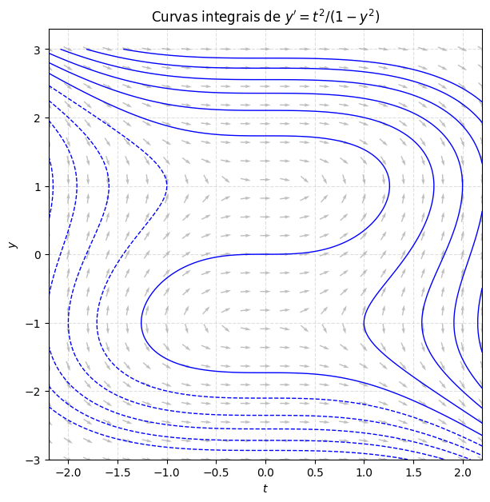
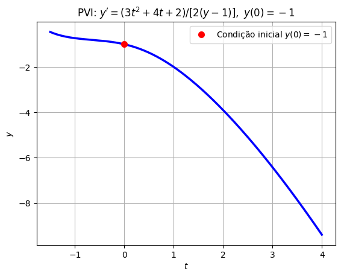
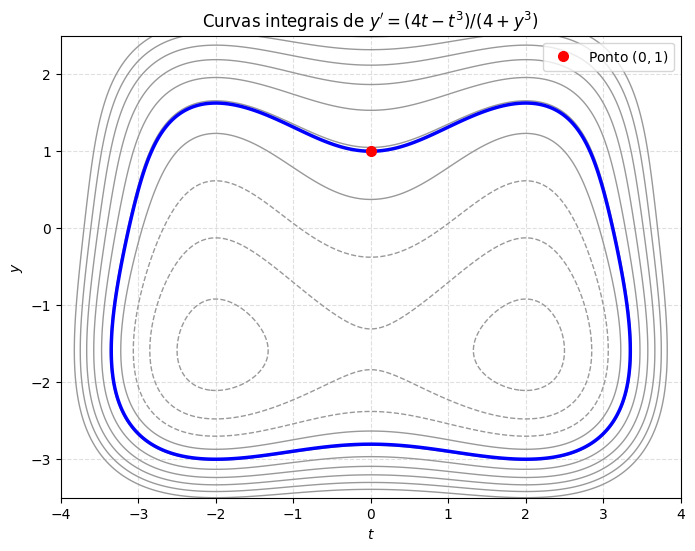
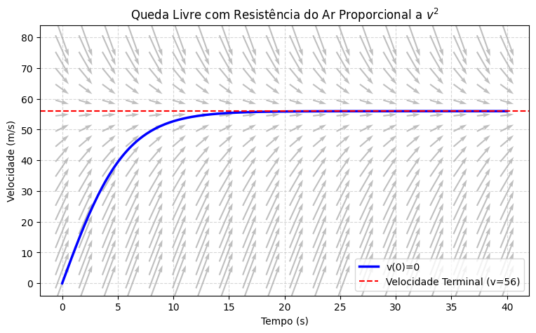
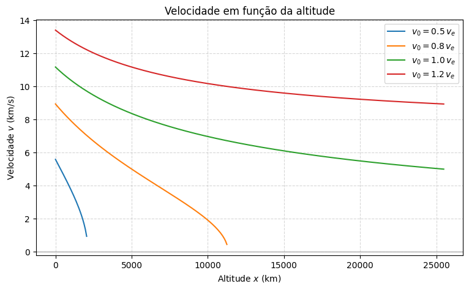

Equações Diferenciais Separáveis#
Motivação: e se a resistência do ar não fosse linear?#
Na aula de modelagem, vimos o modelo de queda livre com resistência do ar proporcional à velocidade (\(\gamma v\)), que pode ser resolvido usando o fator integrante, porque aquela equação era linear. E prometemos voltar para o caso em que a resistência é proporcional ao quadrado da velocidade (mais realista em velocidades maiores):
Essa equação não é linear (por causa do \(v^2\)) — o fator integrante não se aplica diretamente. Mas repare: o lado direito depende só de \(v\), não de \(t\). Isso significa que a equação é autônoma — e toda equação autônoma é, automaticamente, separável. Vamos usar esta aula para desenvolver a técnica de separação de variáveis e, no final, resolver essa equação (e também um outro exemplo clássico: a velocidade de escape de um foguete).
O método de separação de variáveis#
Já vimos rapidamente esse tipo de equação lá no capítulo de classificação. Uma equação de primeira ordem é separável quando pode ser escrita na forma
ou seja, o lado direito se fatora em uma parte que só depende de \(t\) e outra que só depende de \(y\).
Aliás, é exatamente esse formato que já usamos para resolver \(y'=ay+b\) (com \(h(y)=ay+b\) e \(g(t)\equiv 1\)).
Agora vamos generalizar para \(g(t)\) e \(h(y)\) quaisquer.
A ideia para resolvê-la é praticamente um truque de notação. Escrevendo \(y' = dy/dt\):
e agora integramos os dois lados, cada um em relação à sua própria variável:
Calculando as duas primitivas, chegamos a uma equação envolvendo \(t\), \(y\) e uma constante arbitrária \(c\) — em geral, uma equação implícita para \(y\). Às vezes dá para isolar \(y(t)\) explicitamente, às vezes não — e tudo bem, a forma implícita já é uma solução legítima. Se houver uma condição inicial \(y(t_0)=y_0\), usamos ela para determinar \(c\), exatamente como já fizemos antes.
Exemplo 1#
Resolva
Aqui \(g(t)=t^2\) e \(h(y) = \dfrac{1}{1-y^2}\) — de fato separável. Separando as variáveis:
Integrando os dois lados:
Multiplicando tudo por \(-3\) e reorganizando (renomeando a constante):
Essa é uma família de curvas — uma para cada valor de \(c\) — chamadas curvas integrais da equação. Repare que não conseguimos (nem vamos tentar) isolar \(y\) explicitamente aqui: a solução fica naturalmente na forma implícita. Vamos usar o Python para visualizar a família inteira, junto com o campo de direções:
import numpy as np
import matplotlib.pyplot as plt
def f(t, y):
return t**2 / (1 - y**2)
t_grid = np.linspace(-2.2, 2.2, 23)
y_grid = np.linspace(-3, 3, 23) + 1e-3 # pequeno deslocamento pra evitar y = ±1 exatamente
T, Y = np.meshgrid(t_grid, y_grid)
with np.errstate(divide='ignore', invalid='ignore'):
dT = np.ones(T.shape)
dY = f(T, Y)
Lnorm = np.sqrt(dT**2 + dY**2)
dT_n, dY_n = dT/Lnorm, dY/Lnorm
plt.figure(figsize=(7, 7))
plt.quiver(T, Y, dT_n, dY_n, color='gray', alpha=0.5, pivot='mid')
t_fine = np.linspace(-2.2, 2.2, 400)
y_fine = np.linspace(-3, 3, 400)
Tf, Yf = np.meshgrid(t_fine, y_fine)
Z = Tf**3 - 3*Yf + Yf**3
plt.contour(Tf, Yf, Z, levels=np.arange(-15, 16, 3), colors='b', linewidths=1)
plt.title(r"Curvas integrais de $y' = t^2/(1-y^2)$")
plt.xlabel("$t$"); plt.ylabel("$y$")
plt.grid(True, linestyle='--', alpha=0.4)
plt.show()

Repare como as curvas azuis (as curvas integrais, para diferentes valores de \(c\)) seguem exatamente a direção indicada pelo campo cinza — como já esperávamos. Cada escolha de \(c\) corresponde a uma condição inicial diferente.
Exemplo 2 (um PVI que dá para resolver explicitamente)#
Resolva o problema de valor inicial
Separando as variáveis:
Integrando os dois lados:
Usando a condição inicial (\(t=0\), \(y=-1\)): \((-1)^2 - 2(-1) = 1+2 = 3 = c\). Logo,
Dessa vez dá para isolar \(y\): completando o quadrado (\(y^2-2y = (y-1)^2 - 1\)) e resolvendo,
A condição inicial \(y(0)=-1\) escolhe o sinal de menos (confira: \(1-\sqrt{4} = 1-2=-1\) ✓), então a solução do PVI é
t = np.linspace(-1.5, 4, 200)
y_sol = 1 - np.sqrt(t**3 + 2*t**2 + 2*t + 4)
plt.plot(t, y_sol, 'b', linewidth=2.5)
plt.plot(0, -1, 'ro', markersize=7, label="Condição inicial $y(0)=-1$")
plt.title(r"PVI: $y'=(3t^2+4t+2)/[2(y-1)],\ y(0)=-1$")
plt.xlabel("$t$"); plt.ylabel("$y$")
plt.legend()
plt.grid(True)
plt.show()

Exemplo 3 (às vezes só dá para deixar implícito)#
Resolva
e encontre a curva que passa pelo ponto \((0,1)\).
Separando e integrando:
Multiplicando tudo por \(4\) e reorganizando:
Usando o ponto \((0,1)\): \(1 + 16 + 0 - 0 = 17 = c\). Logo, a curva procurada é
Aqui a equação em \(y\) é do quarto grau — não vale a pena tentar isolar \(y(t)\) na mão. Sem problema: a forma implícita já é uma solução perfeitamente válida. Vamos visualizar a família inteira (e destacar a curva que passa por \((0,1)\)) com o Python:
t_fine = np.linspace(-4, 4, 400)
y_fine = np.linspace(-3.5, 2.5, 400)
Tf, Yf = np.meshgrid(t_fine, y_fine)
Z = Yf**4 + 16*Yf + Tf**4 - 8*Tf**2
plt.figure(figsize=(8, 6))
plt.contour(Tf, Yf, Z, levels=np.arange(-30, 90, 12), colors='0.6', linewidths=1)
plt.contour(Tf, Yf, Z, levels=[17], colors='b', linewidths=2.5)
plt.plot(0, 1, 'ro', markersize=7, label="Ponto $(0,1)$")
plt.title(r"Curvas integrais de $y' = (4t-t^3)/(4+y^3)$")
plt.xlabel("$t$"); plt.ylabel("$y$")
plt.legend()
plt.grid(True, linestyle='--', alpha=0.4)
plt.show()

Voltando à queda livre com resistência quadrática#
Lembra da equação que ficou pendurada no início da aula?
Agora temos a ferramenta certa. Essa é uma equação autônoma (o lado direito só depende de \(v\)), logo automaticamente separável, com \(g(t)\equiv 1\) e \(h(v) = g - \frac{\gamma}{m}v^2\).
Vale a pena reescrever a constante: chamando \(k=\gamma/m\) e \(v_{eq}=\sqrt{g/k}=\sqrt{mg/\gamma}\) (a nova velocidade terminal — verifique que \(dv/dt=0\) exatamente em \(v=v_{eq}\), igual fizemos no caso linear!), a equação vira
Separando as variáveis:
Essa integral (que você pode conferir numa tabela de integrais, ou pedindo pro computador) tem como resultado uma tangente hiperbólica. Supondo que o objeto parte do repouso, \(v(0)=0\), o resultado é
Repare que, quando \(t\to\infty\), \(\tanh(\cdot)\to 1\) e \(v(t)\to v_{eq}\) — exatamente como esperávamos: a velocidade se aproxima da velocidade terminal, só que agora seguindo uma curva diferente da exponencial que vimos no caso linear.
Vamos verificar essa solução, do jeito que já viramos fãs: substituindo de volta na equação.
import sympy as sp
t_s, g_s, gamma_s, m_s = sp.symbols('t g gamma m', positive=True)
k_s = gamma_s/m_s
v_eq_s = sp.sqrt(g_s/k_s)
v_s = v_eq_s * sp.tanh(v_eq_s * k_s * t_s)
lado_esquerdo = sp.diff(v_s, t_s)
lado_direito = g_s - k_s*v_s**2
print("v'(t) - (g - k v(t)^2) =", sp.simplify(lado_esquerdo - lado_direito))
v'(t) - (g - k v(t)^2) = 0
m_ = 80 # massa (kg)
gamma_ = 0.25 # coeficiente de arrasto quadrático (kg/m)
g_ = 9.8
k_ = gamma_/m_
v_eq_ = np.sqrt(g_/k_)
print(f"Velocidade terminal: {v_eq_:.0f} m/s")
def f_quad(t, v):
return g_ - k_*v**2
t_grid = np.linspace(0, 40, 20)
v_grid = np.linspace(0, 80, 20)
T, V = np.meshgrid(t_grid, v_grid)
dt_step = (40 - 0) / 20 * 0.6
dT = np.ones(T.shape) * dt_step
dV = f_quad(T, V) * dt_step
t_smooth = np.linspace(0, 40, 200)
v_smooth = v_eq_ * np.tanh(v_eq_ * k_ * t_smooth)
plt.figure(figsize=(9, 5))
plt.quiver(T, V, dT, dV, color='gray', alpha=0.5, pivot='mid',
angles='xy', scale_units='xy', scale=1)
plt.plot(t_smooth, v_smooth, 'b', linewidth=2.5, label='v(0)=0')
plt.axhline(v_eq_, color='red', linestyle='--', label=f'Velocidade Terminal (v={v_eq_:.0f})')
plt.title("Queda Livre com Resistência do Ar Proporcional a $v^2$")
plt.xlabel("Tempo (s)")
plt.ylabel("Velocidade (m/s)")
plt.legend(loc='lower right')
plt.grid(True, linestyle='--', alpha=0.5)
plt.show()
Velocidade terminal: 56 m/s

Compare com o caso linear que vimos na aula de modelagem: lá, a velocidade se aproximava do equilíbrio seguindo uma exponencial, \(v(t) = v_{eq} + (v_0-v_{eq})e^{-kt}\); aqui, seguindo uma tangente hiperbólica. Formas diferentes, mas a mesma ideia física: a resistência do ar sempre «puxa» a velocidade de volta para o equilíbrio.
Vamos ver mais um exemplo clássico em que a separação de variáveis é essencial — dessa vez, olhando para cima, não para baixo.
Velocidade de escape#
Um foguete (ou qualquer objeto) lançado da superfície da Terra, na vertical, com velocidade inicial \(v_0\), sofre a força da gravidade — mas, diferente da queda livre perto do chão, a força gravitacional muda com a altitude: ela é mais fraca quanto mais longe do centro da Terra o objeto está.
Seja \(x\) a altura acima da superfície da Terra (\(x=0\) na superfície) e \(R\) o raio da Terra. A lei da gravitação de Newton diz que a força (peso) sobre um objeto de massa \(m\) é
onde \(g\) é a aceleração da gravidade na superfície (o sinal de menos indica que a força aponta para o centro da Terra). Repare que, em \(x=0\), recuperamos o peso de sempre: \(F(0)=-mg\).
Pela segunda lei de Newton, a equação de movimento é
Só que aqui temos um problema: essa equação envolve \(t\), \(x\) e \(v\) ao mesmo tempo — três variáveis! Não é separável do jeito que está, porque o lado direito depende de \(x\), não de \(t\).
O truque: trocar \(t\) por \(x\) como variável independente#
Como queremos \(v\) em função de \(x\) (a velocidade em função da altura, não do tempo), vamos usar a regra da cadeia para reescrever \(dv/dt\) em termos de \(dv/dx\):
já que \(dx/dt = v\), por definição. Substituindo na equação de movimento (e cancelando o \(m\)):
Agora sim: uma equação envolvendo só \(v\) e \(x\) — e separável!
Separando as variáveis:
Integrando os dois lados:
Usando a condição inicial (\(x=0\), \(v=v_0\)):
Logo,
Essa fórmula nos dá a velocidade em função da altitude \(x\) (e não do tempo!) — repare como a mudança de variável independente foi essencial para isso.
Qual é a menor velocidade inicial que escapa da Terra?#
Olhando para a fórmula de \(v^2\): conforme \(x\to\infty\), o termo \(\dfrac{2gR^2}{R+x}\to 0\), então
Para o objeto nunca parar de subir (ou seja, \(v^2\) nunca chegar a zero, não importa quão longe ele vá), precisamos que esse limite seja não negativo:
A menor velocidade inicial que garante o escape é, portanto, a famosa velocidade de escape:
Usando \(g=9{,}8\ \text{m/s}^2\) e \(R\approx 6371\ \text{km}\), obtemos \(v_e \approx 11{,}2\ \text{km/s}\) — bem acima da velocidade de qualquer avião comercial, e uma das razões pelas quais colocar algo em órbita (ou além) exige tanto combustível.
Podemos visualizar isso: para \(v_0\) abaixo da velocidade de escape, a velocidade cai a zero numa certa altitude (o objeto para e volta); para \(v_0\) igual ou acima da velocidade de escape, a velocidade nunca zera:
g_ = 9.8
R_ = 6371e3 # raio da Terra em metros
v_e = np.sqrt(2*g_*R_)
print(f"Velocidade de escape: {v_e/1000:.2f} km/s")
x = np.linspace(0, 4*R_, 300)
plt.figure(figsize=(9, 5))
for frac in [0.5, 0.8, 1.0, 1.2]:
v0 = frac*v_e
v2 = v0**2 - 2*g_*R_ + 2*g_*R_**2/(R_+x)
v2 = np.where(v2 >= 0, v2, np.nan)
plt.plot(x/1000, np.sqrt(v2)/1000, label=fr'$v_0={frac:.1f}\,v_e$')
plt.axhline(0, color='0.6', linewidth=0.8)
plt.title("Velocidade em função da altitude")
plt.xlabel("Altitude $x$ (km)")
plt.ylabel("Velocidade $v$ (km/s)")
plt.legend()
plt.grid(True, linestyle='--', alpha=0.5)
plt.show()
Velocidade de escape: 11.17 km/s

O que vem a seguir#
Separação de variáveis é uma ferramenta poderosa — muito mais geral que o fator integrante, já que nem exige que a equação seja linear. Mas ela tem seu preço: em geral, a solução fica implícita, e às vezes a integral nem sequer tem uma primitiva elementar.
Na próxima aula, vamos explorar mais modelos que se encaixam nessa forma — incluindo o crescimento logístico, que já apareceu de relance lá na aula de classificação — e, principalmente, vamos aprender a estudar equações autônomas sem sequer precisar resolvê-las, usando só a geometria da linha de fase.